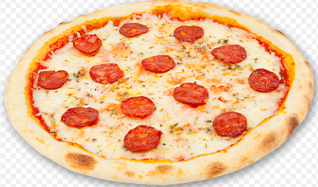
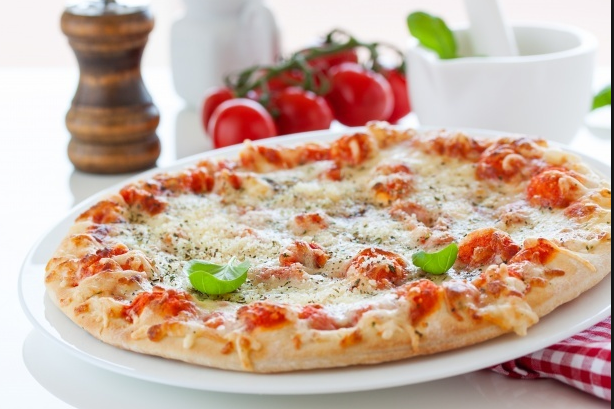
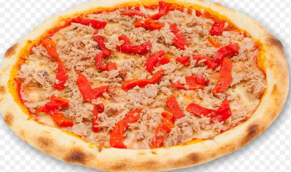

Pizza de Salchicha

Ingredientes para la masa,
200 g harina de trigo común,
20 g levadura fresca prensada,
1 cda aceite de oliva,
1 poco más de aceite para el molde o asadera en dónde se la cocinará,
1 cda manteca de cerdo blanda,
1/2 vaso agua templada,
1 cdts sal.
Pizza de extra queso

Masa para pizza. Puedes comprarla directamente en el supermercado o hacerla en casa con la receta de cómo hacer masa para pizza casera,
Salsa para pizza. ...,
Orégano al gusto,
Pimienta al gusto,
1 taza de champiñones picados,
200 g de queso parmesano,
200 g de queso mozzarella,
1 pizca de pimienta.
Pizza de Peperoni

1 lata (8 onzas) de salsa de tomate sin sal Hunt's® Tomato Sauce-No Salt Added,
1/4 de taza de queso parmesano rallado,
1/4 de cucharadita de orégano seco,
1 masa finas para pizza precocinada (de 12 pulgadas de diámetro),
1 taza de queso mozzarella semi-descremado rallado,
1/3 de taza de pepperoni en rebanadas.
Pizza de parmesano con jamon

250 g de harina,
140 ml de agua tibia,
15 ml de aceite de oliva,
3 g de levadura de panadería instantanea (10 g de levadura fresca),
100 g de jamón york,
75 g de mozzarella,
4 cucharadas de salsa de tomate,
Sal.
Pizza con acitunas

100 g de harina,
15 g de levadura,
60 ml de agua,
10 ml de aceite de oliva,
20 g de cebolla,
40 g de champiñones,
30 g de aceitunas negras,
20 g de calabacín.
Pizza con chile

500 gramos de carne molida,
1/2 cebolla,
1 tomate grande o 2 medianos maduros
2 tazas de queso rallado para pizzas (lo mejor es una mezcla de chancho, mozarella),
1 ají verde,
6 masa de pizza pre-hechas, yo use FlatOut o masa de pizza casera,
aceite de oliva.